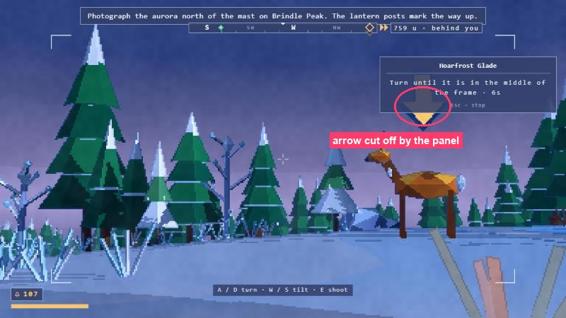
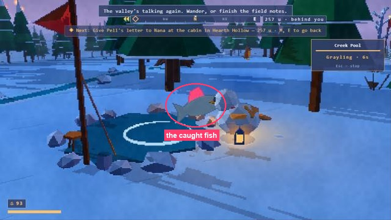
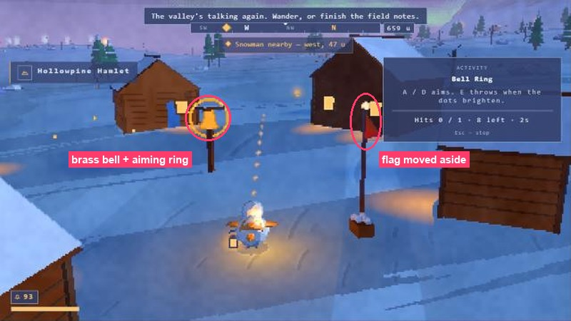
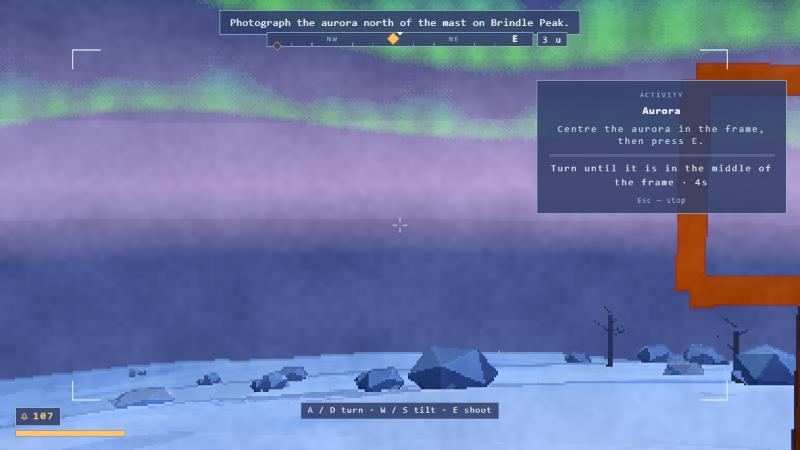
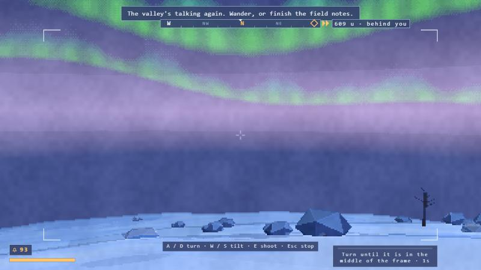

Round 6 look: all seven settled
Real captures from the game at 960×540. Pink circles mark where to look. Every "After" is built into the game and pushed. Click any image to enlarge.
1. Activity panel while taking a photo
Hoarfrost Glade photo, PinewindThe panel now sits on the same row as the keys bar, at the same height, right beside it. It shows only the running line; "Esc stop" is on the keys bar. To fit one line at this window size, "Turn until it is in the middle of the frame" became "Turn until it is centred".


5. The fish you catch
Creek Pool, Pinewind, a graylingA real fish shape (rounded body, forked tail, tall back fin, eye), about a third smaller than the mock so it sits below Pip's size. Natural colours, no purple: each fish has a darker body and one fin colour of its own. The grayling is grey with its rose back fin, the char brown with an orange fin, the pike green, the smelt silver-blue. The ghost trout stays pale with a teal fin.


6. The bell you throw at
Bell Ring, Hamlet squareOption B as you picked: a brass bell hung from the crossbar, a lit ring round it only while you're playing Bell Ring, and the start flag moved to the other side so it no longer stands in front of the bell.


3. Bigger green gem over things to do
Hamlet, dusk

4. Photo spot's frame post hidden while shooting
Aurora photo, Brindle Peak

2. Pip's lantern glow · 7. Windscar Ridge face
Both left as they are.